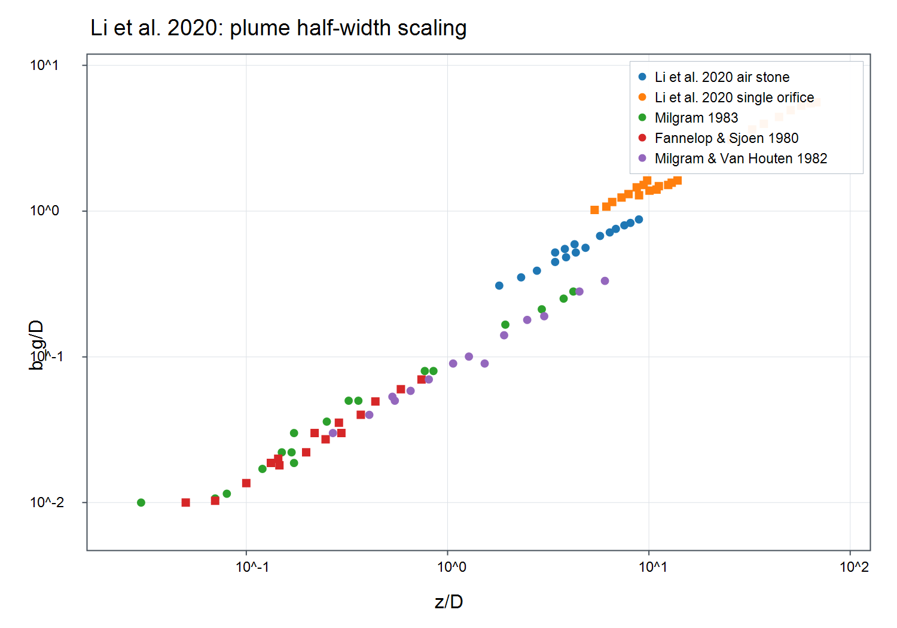
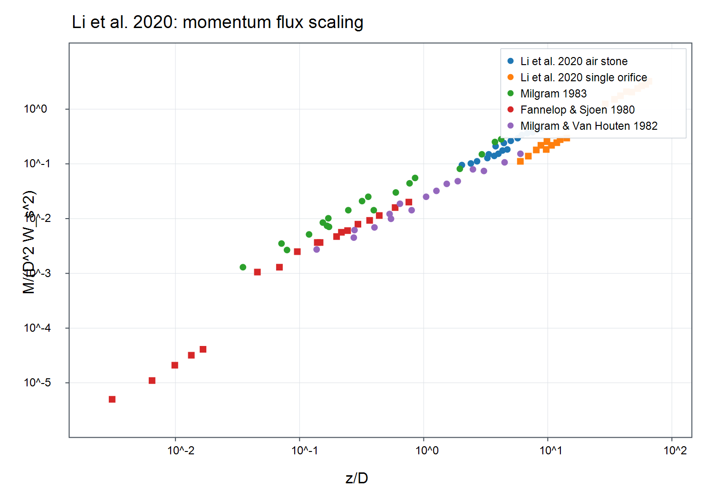
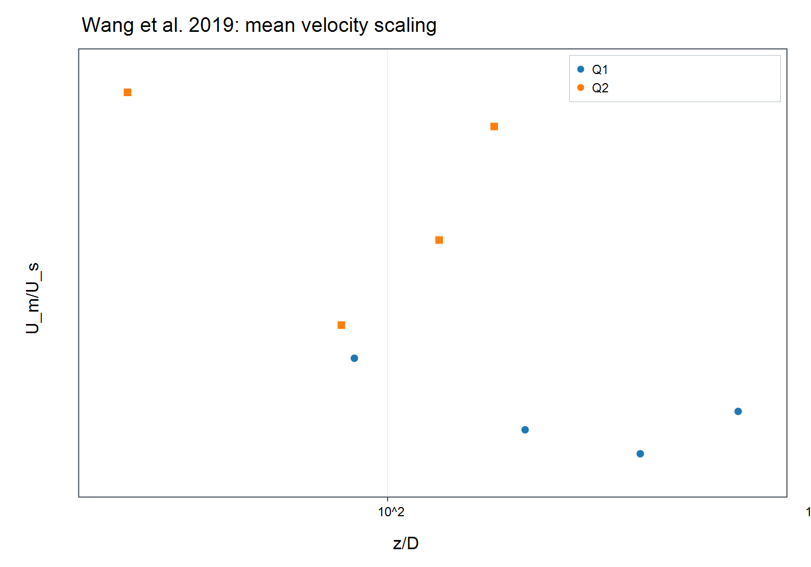
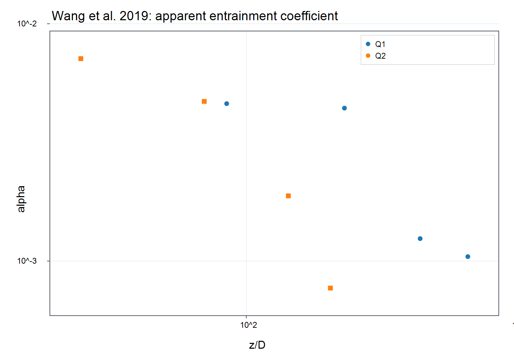

Data catalog
Each record provides the paper DOI and two data download options. CSV files are intended for reproducible analysis, while XLSX files are formatted companion workbooks for easier inspection.
| Publication | Data type | DOI | CSV | XLSX | Notes |
|---|---|---|---|---|---|
| Milgram, J. H. (1983). Mean flow in round bubble plumes. Journal of Fluid Mechanics, 133, 345–376. | Tabular data | DOI | CSV | XLSX |
Selected dimensional data from Milgram’s original tables. Use source_table
and table_title to identify each table block. CSV is for analysis; XLSX is for
easier inspection.
|
| Li, G., Wang, B., Wu, H., & DiMarco, S. F. (2020). Impact of bubble size on the integral characteristics of bubble plumes in quiescent and unstratified water. International Journal of Multiphase Flow, 125, 103230. | Nondimensionalized comparison data | DOI | CSV | XLSX | Wide paired-series format for nondimensional scaling plots. Each series has adjacent x-y columns. CSV is for analysis; XLSX is for easier inspection. |
| Wang, B., Lai, C. C. K., & Socolofsky, S. A. (2019). Mean velocity, spreading and entrainment characteristics of weak bubble plumes in unstratified and stationary water. Journal of Fluid Mechanics, 874, 102–130. | Nondimensionalized weak bubble plume data | DOI | CSV | XLSX | Weak bubble plume data for normalized centreline velocity, apparent entrainment coefficient, plume half-width, volume flux, and momentum flux. CSV is for analysis; XLSX is for easier inspection. |
Reproducible plots
The notebook reads the paper-level master CSV files and regenerates selected comparison figures. Static examples are shown below, with additional figures saved by the same notebook.




Additional figures are generated in the notebook and saved under
figures/reproducible_plots/.
Notes
- CSV files are the primary machine-readable data files.
- XLSX files are formatted companion workbooks with a Details sheet and a Data sheet.
- Older split CSV files are retained only as source/development files and are not the main public downloads.
- Future datasets should follow the same structure: one CSV and one formatted XLSX per paper.